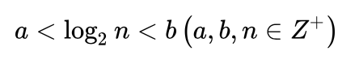

二分查找 (Binary Search)
查找过程
首先，假设表中元素是按升序排列，将表中间位置记录的关键字与查找关键字比较，如果两者相等，则查找成功；否则利用中间位置记录将表分成前、后两个子表，如果中间位置记录的关键字大于查找关键字，则进一步查找前一子表，否则进一步查找后一子表。重复以上过程，直到找到满足条件的记录，使查找成功，或直到子表不存在为止，此时查找不成功。
算法要求
1.必须采用顺序存储结构。
2.必须按关键字大小有序排列。
比较次数
计算公式：

当顺序表有n个关键字时：
查找失败时，至少比较a次关键字；查找成功时，最多比较关键字次数是b。
注意：a,b,n均为正整数。
算法复杂度
二分查找的基本思想是将n个元素分成大致相等的两部分，取a[n/2]与x做比较，如果x=a[n/2],则找到x,算法中止；如果x
时间复杂度即是while循环的次数。
总共有n个元素，
渐渐跟下去就是n,n/2,n/4,....n/2^k（接下来操作元素的剩余个数），其中k就是循环的次数
由于你n/2^k取整后>=1
即令n/2^k=1 （最坏的情况）
可得k=log2n,（是以2为底，n的对数）
所以时间复杂度可以表示O(h)=O(log2n)
伪代码 (Pseudocode)
BinarySearch(max,min,des)
while(min<=max) {
mid=(min+max)/2
if mid=des then
return mid
else if mid>des then
max=mid-1
else
min=mid+1
}
return max
C和C++（语法基本相同）
第一种
int BinSearch(SeqList *R，int n,KeyType K)
{
//在有序表R[0..n-1]中进行二分查找，成功时返回结点的位置，失败时返回-1
int low=0,high=n-1,mid； //置当前查找区间上、下界的初值
while(low<=high)
{
if(R[low].key==K)
return low;
if(R[high].key==k)
return high; //当前查找区间R[low..high]非空
mid=low+(high-low)/2;
/*使用(low+high)/2会有整数溢出的问题
（问题会出现在当low+high的结果大于表达式结果类型所能表示的最大值时，
这样，产生溢出后再/2是不会产生正确结果的，而low+((high-low)/2)
不存在这个问题*/
if(R[mid].key==K)
return mid; //查找成功返回
if(R[mid].key<K)
low=mid+1; //继续在R[mid+1..high]中查找
else
high=mid-1; //继续在R[low..mid-1]中查找
}
if(low>high)
return -1;//当low>high时表示所查找区间内没有结果，查找失败
}
第二种
int bsearchWithoutRecursion(int array[],int low,int high,int target)
{
while(low<=high)
{
int mid=low+(high-low)/2;//还是溢出问题
if(array[mid]>target)
high=mid-1;
else if(array[mid]<target)
low=mid+1;
else
return mid;
}
return-1;
}
第三种
int binSearch(const int *Array,int start,int end,int key)
{
int left,right;
int mid;
left=start;
right=end;
while(left<=right)
{
mid=left+(right-left)/2;//还是溢出问题
if(key==Array[mid]) return mid;
else if(key<Array[mid]) right=mid-1;
else if(key>Array[mid]) left=mid+1;
}
return -1;
}
Java
public static int binarySearch(Integer[] srcArray, int des) {
//定义初始最小、最大索引
int start = 0;
int end = srcArray.length - 1;
//确保不会出现重复查找，越界
while (start <= end) {
//计算出中间索引值
int middle = (end + start)>>>1 ;//防止溢出
if (des == srcArray[middle]) {
return middle;
//判断下限
} else if (des < srcArray[middle]) {
end = middle - 1;
//判断上限
} else {
start = middle + 1;
}
}
//若没有，则返回-1
return -1;
}